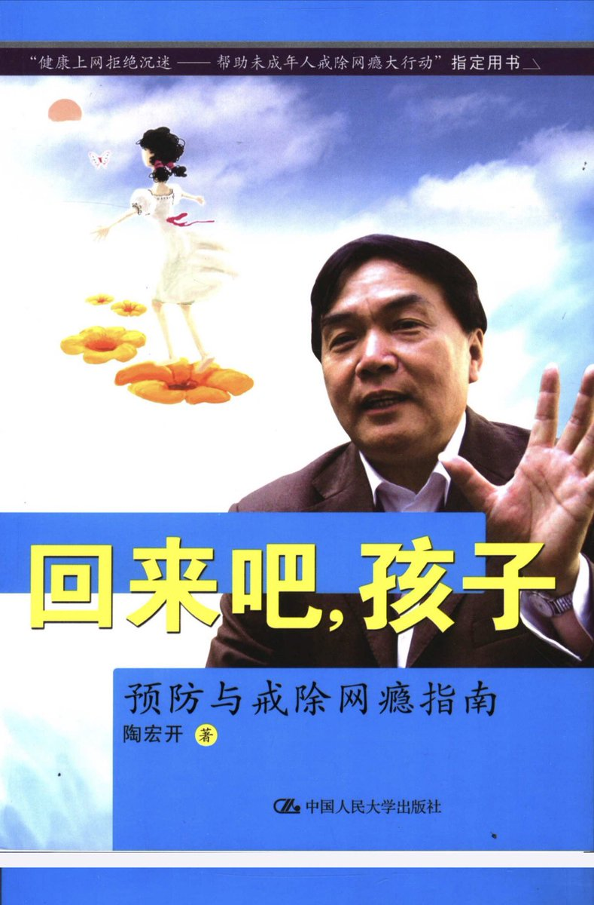
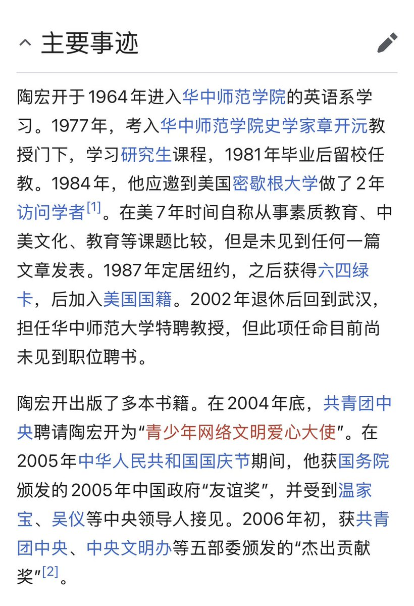
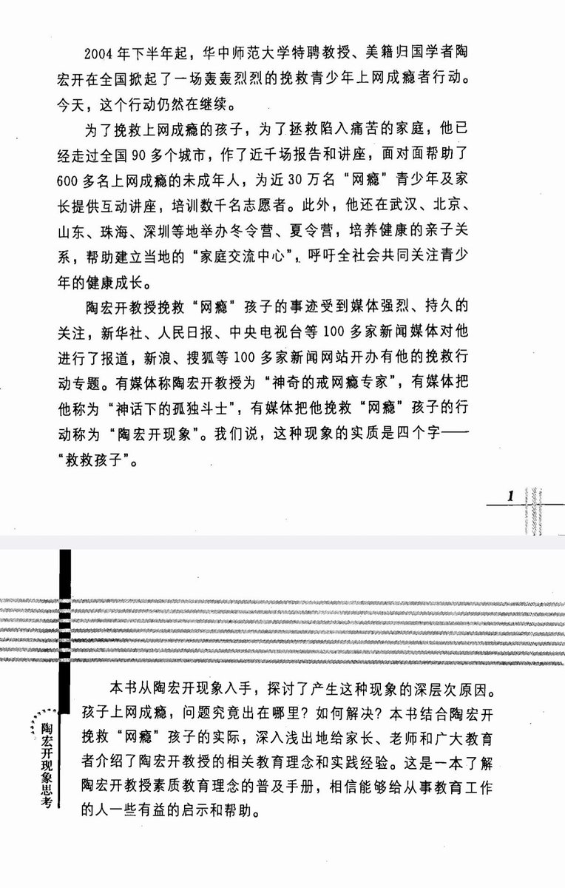
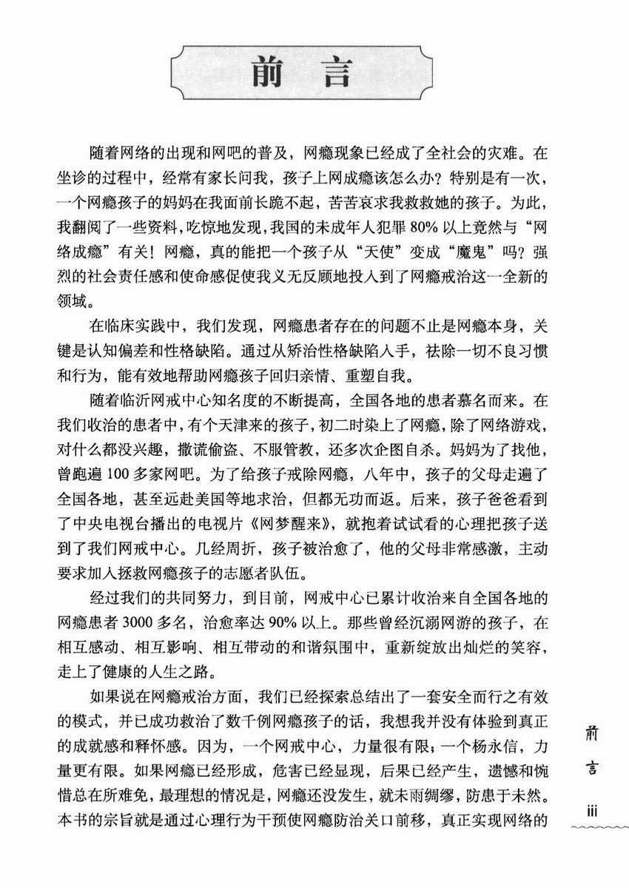
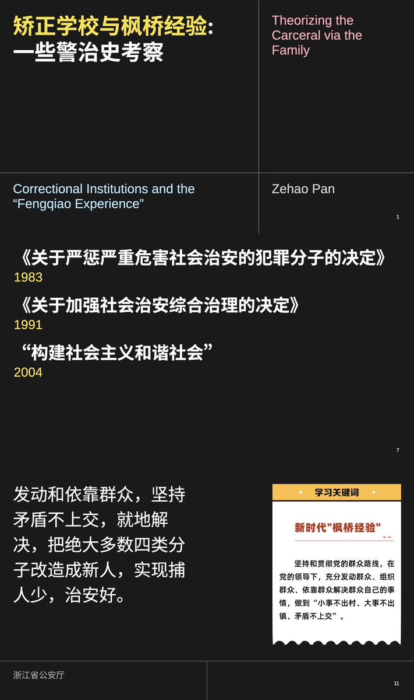
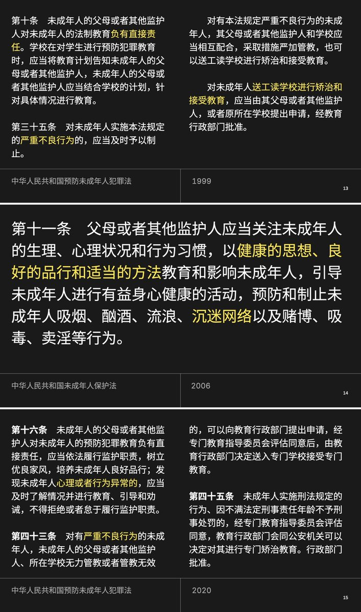

2000年代初，互联网及电脑游戏进入中国，给中国青少年带来了认知世界和社交娱乐的新媒介，也引发了家长们因感到「失去对孩子的控制」产生的巨大焦虑感。同时，包分配制度的结束和高考的重要作用，也让教育（高考）成为了家长们心目中寻求阶级流动（或者防止阶级滑落）的唯一途径。在这样的语境下，陶宏开、杨永信等专家横空出世，开始渲染网瘾的可怖；而陶作为有留美经验的美籍华人，更是作为「素质教育」领域的特聘专家，将美国问题青少年产业（TTI）的主要方法和运营模式引入了中国。
在无数相关从业者（如杨永信等人）的努力下，网瘾塑造为导致未成年犯罪的直接影响因素，直接促使了「网络成瘾」被写入了2006年款《未成年人保护法》的「不良行为」一节里。由于法律规定只有违反治安管理处罚法和刑法的「严重不良行为」才能被送往官方运营的「专门矫治学校」，而不良行为只能由「家长批评教育」进行管束，在家长自觉无能对孩子进行批评管束的情况下，便会寻找杨永信、陶宏开等半官方乃至市场化运营的机构。在这样的背景下，大量戒网瘾机构便如雨后春笋般不断涌现，并在家长的强烈精神和经济支持下，发展到了今天的规模。

在无数相关从业者（如杨永信等人）的努力下，网瘾塑造为导致未成年犯罪的直接影响因素，直接促使了「网络成瘾」被写入了2006年款《未成年人保护法》的「不良行为」一节里。由于法律规定只有违反治安管理处罚法和刑法的「严重不良行为」才能被送往官方运营的「专门矫治学校」，而不良行为只能由「家长批评教育」进行管束，在家长自觉无能对孩子进行批评管束的情况下，便会寻找杨永信、陶宏开等半官方乃至市场化运营的机构。在这样的背景下，大量戒网瘾机构便如雨后春笋般不断涌现，并在家长的强烈精神和经济支持下，发展到了今天的规模。






为了寻找更有可持续性的替代方案，在法学界的大量讨论和倡议下（也同时是在向西方「先进国家」学习借鉴的情况下），1991年2月19日，中共中央、国务院作出了《关于加强社会治安综合治理的决定》，开始重新探索「群众路线」「枫桥经验」等基于社区的警治方案。90年代，随着「社会/生理性别」概念的译介和 https://t.co/eyZacqCnD4